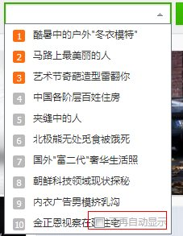
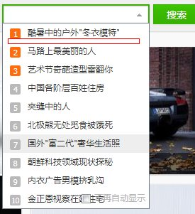
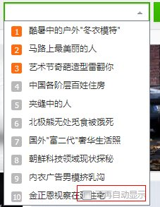
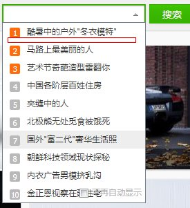

图搜hotSuggest的IE3像素Bug
2014年1月20日，下午在改图搜hotSuggest一个重叠bug的时候遇到了经典的IE3像素问题。

所谓IE3像素Bug，就是当浮动元素与非浮动元素相邻的时候，在IE6、7下会出现3个像素的空隙。

在这里li是非浮动元素，而其中的有两个浮动的span元素，这样就造成了每个li之间有3个像素的空隙
而相应的解决方法就是，*margin-bottom:-3px;来让间隔元素偏移会对的位置。
2014年1月20日，下午在改图搜hotSuggest一个重叠bug的时候遇到了经典的IE3像素问题。

所谓IE3像素Bug，就是当浮动元素与非浮动元素相邻的时候，在IE6、7下会出现3个像素的空隙。

在这里li是非浮动元素，而其中的有两个浮动的span元素，这样就造成了每个li之间有3个像素的空隙
而相应的解决方法就是，*margin-bottom:-3px;来让间隔元素偏移会对的位置。